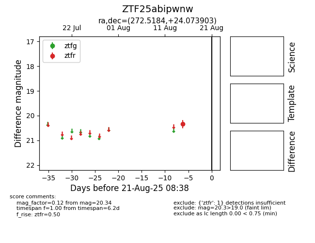

Target ZTF25abipwnw at 2025-08-21 08:38, see:
FINK: fink-portal.org/ZTF25abipwnw
Lasair: lasair-ztf.lsst.ac.uk/objects/ZTF25abipwnw
ALeRCE: alerce.online/object/ZTF25abipwnw
alt names
ZTF25abipwnw (ztf,alerce)
coordinates:
equatorial (ra, dec) = (272.5184,+24.07390)
galactic (l, b) = (50.7278,+19.38207)
photometry
last ztfr=20.34
1 ztfr detections
